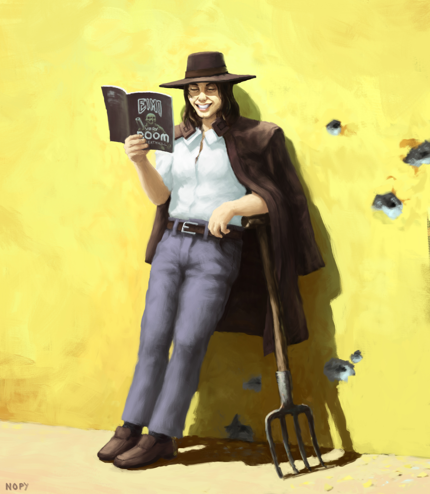

Caleb from the 90s FPS game Blood

FPS concept painting

Strange statue

Spooky horse-face thing

Concept art for a community project that never took flight
A few paintings of mine.
Caleb from the 90s FPS game Blood
FPS concept painting
Strange statue
Spooky horse-face thing
Concept art for a community project that never took flight

Book cover art

Badass Mario Doodle